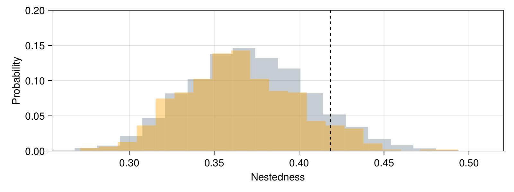
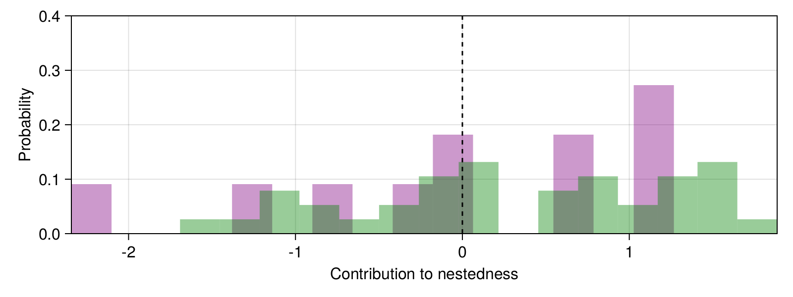

Null models
In order to illustrate the use of null models, we will look at the data from Dupont et al. (2003), and specifically generate multiple networks under different null models, then compare the nestedness (using η) to the empirical network. We will then use the approach of Saavedra et al. (2011) to quantify the contribution of each species to nestedness.
using SpeciesInteractionNetworks
import CairoMakie
import Statistics
The data are available from the IWDB, but in order to avoid making unecessary calls to their webserver, we have reproduced a version here:
int_mat = Bool[
1 1 1 0 1 1 0 0 1 0 0; 1 0 0 1 1 1 0 1 0 1 0; 1 0 1 0 1 1 1 0 0 0 0;
0 1 0 1 0 1 1 1 0 1 0; 1 0 1 0 1 1 1 0 0 1 0; 0 1 1 0 1 0 1 0 1 0 1;
1 1 1 1 0 0 1 0 0 0 0; 1 0 0 0 1 1 0 0 0 1 0; 1 1 1 0 0 0 0 1 0 0 0;
1 1 0 0 0 1 1 0 0 0 0; 1 1 0 1 0 0 0 0 1 0 0; 1 1 1 0 0 0 0 1 0 0 0;
0 1 0 1 0 0 0 1 0 0 0; 1 0 1 0 1 0 0 0 0 0 0; 0 0 1 0 1 0 0 0 0 0 1;
1 0 1 1 0 0 0 0 0 0 0; 0 0 1 1 1 0 0 0 0 0 0; 0 1 0 0 0 0 1 0 1 0 0;
0 0 0 0 0 1 1 0 0 0 0; 0 0 0 1 0 1 0 0 0 0 0; 1 0 0 0 1 0 0 0 0 0 0;
0 0 1 0 0 0 0 1 0 0 0; 1 0 0 0 0 0 0 0 1 0 0; 0 0 1 0 0 0 0 0 1 0 0;
0 0 0 1 0 0 0 0 0 0 0; 0 1 1 0 0 0 0 0 0 0 0; 1 0 0 1 0 0 0 0 0 0 0;
1 0 0 0 0 0 0 0 0 0 0; 0 0 0 0 0 0 0 0 0 1 0; 0 0 0 0 0 0 0 1 0 0 0;
0 1 0 0 0 0 0 0 0 0 0; 0 1 0 0 0 0 0 0 0 0 0; 1 0 0 0 0 0 0 0 0 0 0;
1 0 0 0 0 0 0 0 0 0 0; 0 0 0 1 0 0 0 0 0 0 0; 0 0 0 1 0 0 0 0 0 0 0;
0 1 0 0 0 0 0 0 0 0 0; 0 0 0 0 0 0 0 0 1 0 0
]
38×11 Matrix{Bool}:
1 1 1 0 1 1 0 0 1 0 0
1 0 0 1 1 1 0 1 0 1 0
1 0 1 0 1 1 1 0 0 0 0
0 1 0 1 0 1 1 1 0 1 0
1 0 1 0 1 1 1 0 0 1 0
0 1 1 0 1 0 1 0 1 0 1
1 1 1 1 0 0 1 0 0 0 0
1 0 0 0 1 1 0 0 0 1 0
1 1 1 0 0 0 0 1 0 0 0
1 1 0 0 0 1 1 0 0 0 0
⋮ ⋮ ⋮
0 0 0 0 0 0 0 1 0 0 0
0 1 0 0 0 0 0 0 0 0 0
0 1 0 0 0 0 0 0 0 0 0
1 0 0 0 0 0 0 0 0 0 0
1 0 0 0 0 0 0 0 0 0 0
0 0 0 1 0 0 0 0 0 0 0
0 0 0 1 0 0 0 0 0 0 0
0 1 0 0 0 0 0 0 0 0 0
0 0 0 0 0 0 0 0 1 0 0
We can turn this into a network (without species names!):
edges = Binary(int_mat)
nodes = Bipartite(edges)
N = SpeciesInteractionNetwork(nodes, edges)
@info "$(richness(N,1)) pollinators"
@info "$(richness(N,2)) plants"
@info "$(length(N)) interactions"
[ Info: 38 pollinators
[ Info: 11 plants
[ Info: 106 interactions
We first measure the nestedness of the network:
n0 = η(N)
0.41842877034736853
The next step is to generate a template probabilistic network under a specific null model. Here, we will focus on the null model based on the joint degree distribution, as used by e.g. Bascompte et al. (2003).
Nd = nullmodel(Degree, N)
A probabilistic bipartite network
→ 106.0 ± 75.18181818181819 interactions
→ 38 & 11 species
We can draw samples from this network, and measure their nestedness. But because the random networks might have species that are disconnected. In order to get a sense of the importance of these networks, we will use the isdegenerate function to identify them:
Rd = [randomdraws(Nd) for _ in 1:5000]
connected_networks = findall(!isdegenerate, Rd)
nd = η.(Rd)
@info round.((minimum(nd), Statistics.median(nd), maximum(nd)); digits=4)
[ Info: (0.2545, 0.3695, 0.5205)
Alternative solution
An alternative to using filter and isdegenerate is to call the simplify function, which will return a network in which non-interacting species are removed. That being said, simplifying the network changes its richness. This might result in comparing apples and oranges, and seems like a more risky solution.
This is all we need to plot the results:
f = CairoMakie.Figure(backgroundcolor = :transparent, resolution = (800, 300))
ax = CairoMakie.Axis(f[1,1], xlabel="Nestedness", ylabel="Probability")
CairoMakie.hist!(ax, nd; normalization=:probability, fillto=0.0, color=(:slategray, 0.4), bins=20)
CairoMakie.hist!(ax, nd[connected_networks]; normalization=:probability, fillto=0.0, color=(:orange, 0.4), bins=20)
CairoMakie.vlines!(ax, [n0], color=:black, linestyle=:dash)
CairoMakie.tightlimits!(ax)
CairoMakie.ylims!(ax, (0.0, 0.2))
CairoMakie.current_figure()

In practice, we are often interested in deriving a p-value from the comparison of the empirical and null values of the structure measure. Note that, functionally, the generation of null models can be seen as permutation testing, and therefore we can approximate the p-value corresponding to the hypothesis that the network is more nested than expected under its degree distribution by looking at the proportion of randomized values that are larger than the empirical observation:
@info "𝑝 ≈ $(round(Statistics.mean(n0 .<= nd); digits=3))"
[ Info: 𝑝 ≈ 0.098
We can then compare the result when only looking at networks without disconnected species:
@info "𝑝 ≈ $(round(Statistics.mean(n0 .<= nd[connected_networks]); digits=3))"
[ Info: 𝑝 ≈ 0.077
At this time, we can think about the contribution of each species to the global nestedness score. To do this, we will use the approach of Saavedra et al. (2011), in which the contribution of each species is assessed by randomizing only the interactions of this species.
The result will be returned as a z-score, where positive values indicate that the species contributes positively to nestedness, a value of zero indicates no effect, and negative values means that the species decreases nestedness.
speciescontribution(Degree, N, first(species(N)), η; replicates=99)
1.4226322777707516
We can also iterate over the two levels in the network:
contrib_top = [speciescontribution(Degree, N, sp, η; replicates=99) for sp in species(N, 1)];
contrib_bot = [speciescontribution(Degree, N, sp, η; replicates=99) for sp in species(N, 2)];
And we can plot the results
f = CairoMakie.Figure(backgroundcolor = :transparent, resolution = (800, 300))
ax = CairoMakie.Axis(f[1,1], xlabel="Contribution to nestedness", ylabel="Probability")
CairoMakie.hist!(ax, contrib_bot; normalization=:probability, fillto=0.0, color=(:purple, 0.4))
CairoMakie.hist!(ax, contrib_top; normalization=:probability, fillto=0.0, color=(:green, 0.4))
CairoMakie.vlines!(ax, [0.0], color=:black, linestyle=:dash)
CairoMakie.tightlimits!(ax)
CairoMakie.ylims!(ax, (0.0, 0.4))
CairoMakie.current_figure()
